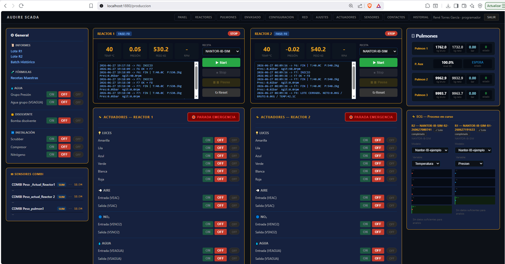
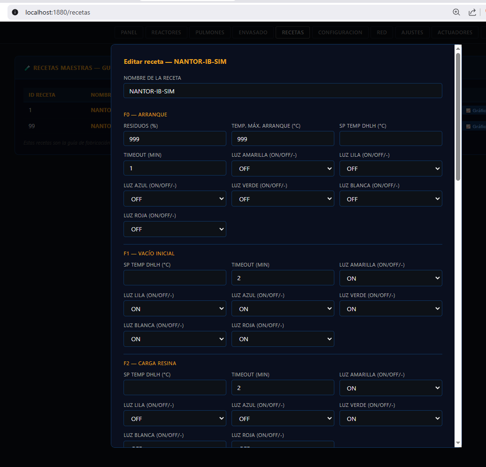
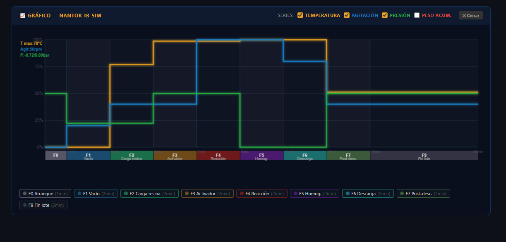
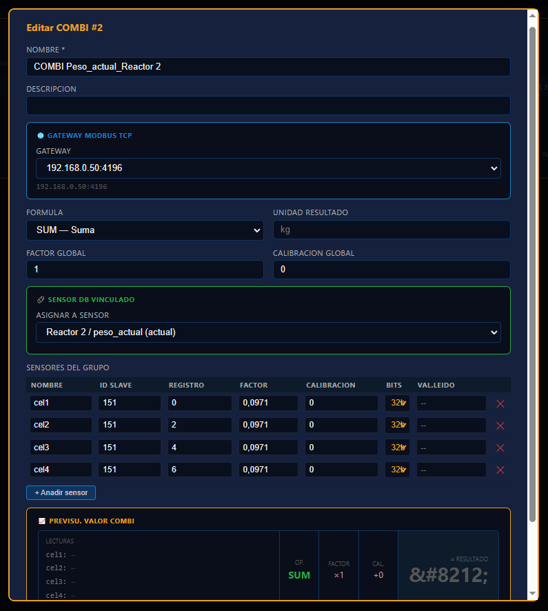
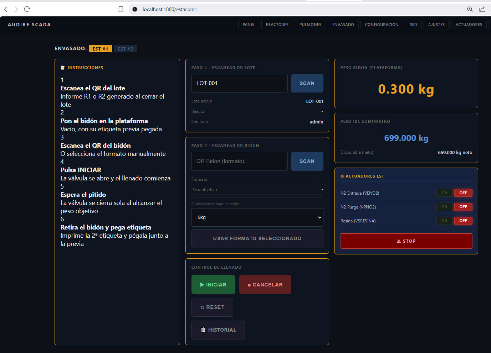
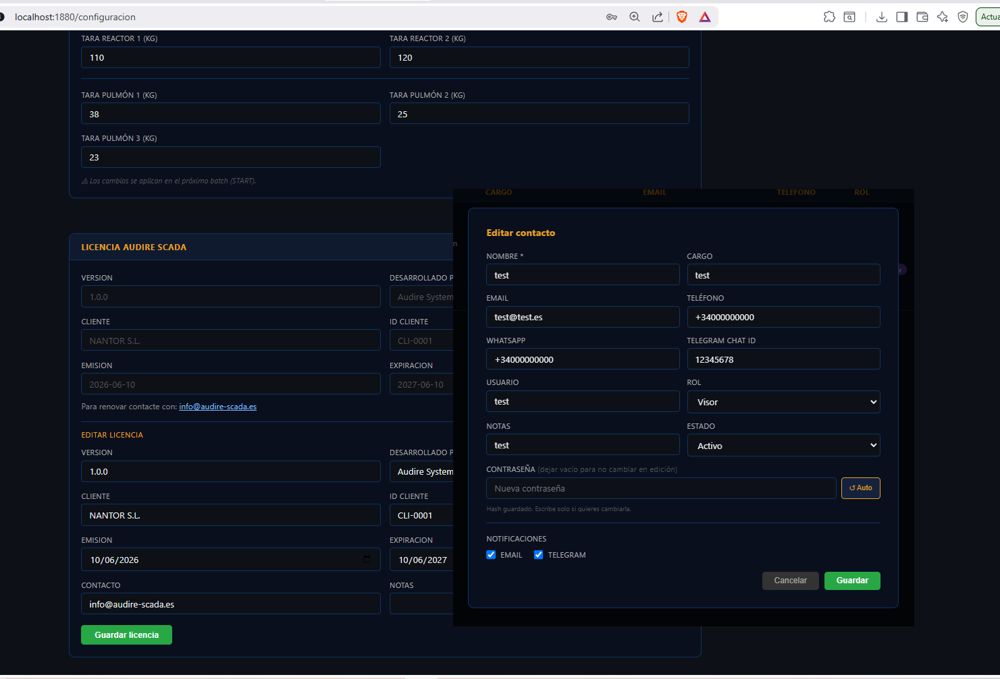

AUDIRE SCADA es un sistema de control industrial desarrollado específicamente para la fabricación de productos químicos por lotes. Controla, registra y analiza cada proceso desde el arranque hasta el envasado final — sin depender de software de terceros, sin licencias anuales, sin límites de tags.
En la industria química, cada minuto de proceso mal controlado se traduce en producto fuera de especificación, merma de materia prima y riesgo para el operario. AUDIRE SCADA elimina ese riesgo convirtiendo cualquier reactor en una máquina de precisión programable.
El operario arranca un lote seleccionando una Receta Maestra y pulsando START. El sistema hace el resto: activa el controlador térmico, gestiona las cargas de reactivo desde los pulmones, supervisa cada fase con sus tiempos y tolerancias, y notifica por correo y Telegram al finalizar. Sin intervención manual. Sin errores de transcripción.
Construido sobre Node-RED y SQLite, AUDIRE SCADA funciona en un miniPC Windows conectado a la red de planta. No requiere Internet. No requiere servidores externos. Todo el conocimiento del proceso queda dentro de la fábrica.
Nueve fases de proceso configurables: preparación, carga, reacción, vacío, enfriamiento, inertización y descarga. Cada fase ejecuta hasta 6 subflujos secuenciales con lógica propia.
Define temperatura, presión, tiempos, cargas de reactivo y señalización luminosa por fase. El operario selecciona receta y pulsa START. El sistema ejecuta el proceso de forma autónoma.
Widget ECG en tiempo real con comparativa contra lote de referencia. Análisis cuadrático y trapezoidal por área de desviación. Histórico completo con superposición de hasta 5 lotes.
Llenado ponderal controlado con auto-stop al alcanzar peso objetivo. QR de bidón, trazabilidad completa por lote y operario, histórico de los 200 últimos envasados.
Alertas automáticas por Telegram y correo electrónico al iniciar, en caso de alarma y al finalizar cada lote. Informe PDF generado y enviado automáticamente en F9.
Cinco roles de usuario: Visor, Operario, Supervisor, Admin y Programador. Audit trail inmutable. Historial de accesos con IP. Bloqueo automático por intentos fallidos.
Desde el arranque del reactor hasta el etiquetado del bidón, AUDIRE SCADA cubre cada etapa del proceso sin depender de aplicaciones externas.

El epicentro de operaciones. El operario supervisa la fase activa, los parámetros en tiempo real y el estado del controlador DHLH. Las decisiones manuales se limitan a confirmar en pantalla — el sistema hace el resto.

Sin programación. El supervisor define temperatura de consigna, tiempos máximos, cargas de reactivo por pulmón, velocidad de agitación y señalización luminosa para cada fase y subflujo mediante formulario web.

El widget ECG muestra en tiempo real la desviación del lote activo respecto al lote de referencia. Al terminar, el módulo de autopsia permite comparar hasta 5 lotes históricos en el mismo gráfico para detectar derivas de proceso.

Gestión completa de sensores Modbus RTU conectados via gateway RS485-ETH. Detección automática de dispositivos, cambio de Slave ID desde el navegador y diagnóstico de comunicación con indicador de color por antigüedad de lectura.

Dos estaciones de envasado independientes con llenado controlado por peso. Auto-stop al alcanzar el objetivo, protección anti-doble llenado y QR de bidón vinculado al lote de origen. Operación optimizada para lectores de código de barras.

Panel de administración completo con gestión de usuarios por roles, historial de acciones auditables, estado de red de gateways Modbus y configuración de parámetros de sistema. La licencia queda vinculada al hardware de la instalación.
Ignition es una plataforma excelente. No somos competencia directa — somos la alternativa correcta para un perfil de cliente concreto.
| Criterio | AUDIRE SCADA | Ignition (Inductive Automation) |
|---|---|---|
| Coste de licencia | VENTAJA Licencia perpetua incluida en el proyecto llave en mano. Sin cuotas anuales. | Miles de euros en licencias + módulos adicionales + mantenimiento anual. |
| Especialización en batch químico | VENTAJA Diseñado específicamente para procesos F0–F9 con subflujos, cargas de reactivo y recetas maestras. | Plataforma genérica. El módulo de batch requiere ingeniería específica y configuración extensa. |
| Curva de aprendizaje | VENTAJA El técnico de planta configura sensores, actuadores y recetas desde el navegador sin formación especial. | Requiere ingenieros certificados en Ignition. Formación oficial obligatoria. |
| Trazabilidad y PDF integrados | VENTAJA Informe PDF automático con QR por lote, firma del operario y notificación por correo de serie. | Requiere módulo Reporting adicional y configuración manual de plantillas. |
| Tiempo de puesta en marcha | VENTAJA Planta operativa en semanas. Hardware y software integrados desde fábrica. | Proyectos típicamente de 3–12 meses con integradores certificados. |
| Redundancia y alta disponibilidad | LIMITACIÓN Arquitectura de un único servidor en planta. Sin failover automático nativo. | Redundancia de servidor nativa. Gateway redundante. Alta disponibilidad enterprise. |
| Escalabilidad multi-planta | LIMITACIÓN Una instalación por cliente. Diseñado para una planta dedicada. | Gestión de decenas de plantas desde una instancia central. |
| Historiador de series temporales | LIMITACIÓN SQLite cubre el volumen de una planta química estándar. | Historiador industrial nativo. Integración con InfluxDB, bases de datos externas. |
| Ecosistema de módulos | LIMITACIÓN Funcionalidad construida a medida. Sin módulos de terceros para OEE, MES o ERP. | Ecosistema maduro: OEE, MES, conectores ERP, Vision, Perspective, Edge... |
| Respaldo y reputación | LIMITACIÓN Producto especializado de fabricante europeo pequeño. Menor peso en auditorías enterprise. | 20+ años de mercado. Miles de instalaciones globales. Referencia en el sector. |
Conclusión: AUDIRE SCADA gana en coste, especialización y simplicidad para el nicho de fabricación química por lotes en pymes. Ignition gana en robustez, escalabilidad y ecosistema para grandes instalaciones o clientes que necesitan certificaciones enterprise. Son mercados distintos. AUDIRE no necesita ser mejor que Ignition en todo — necesita ser la mejor opción para su cliente objetivo. Es la mejor opción si quiere automatizar sus reactores y planta de química fina.
Envíenos el resumen técnico de su proceso. Nuestros ingenieros evaluarán la viabilidad en 48 horas. Sin compromiso. Sin humo.